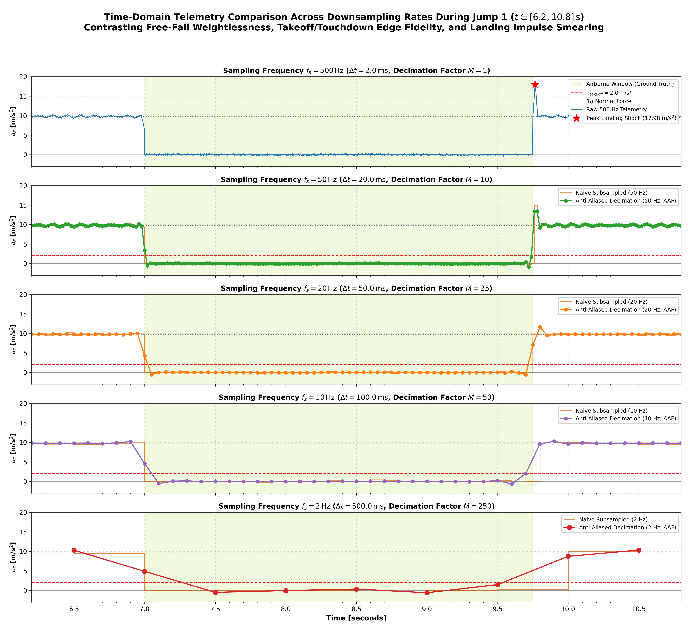
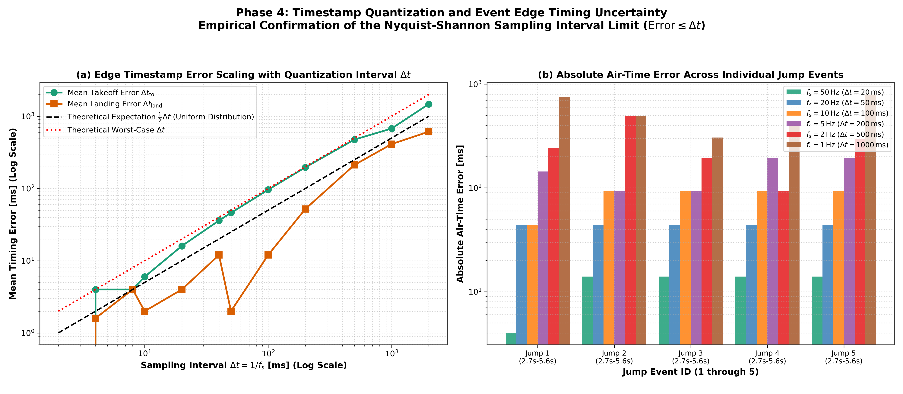
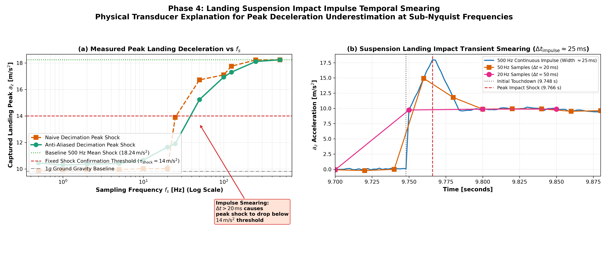
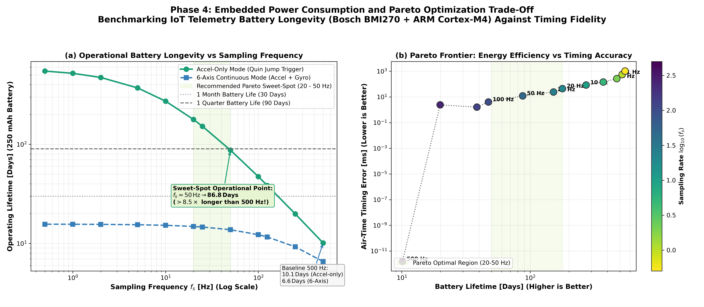

Task: Objective 3 (Downsampling for Power Efficiency)
Project: Motocross Jump Analytics & Signal Processing Engine
Author: Sachin Sagar (Edge IMU Motion Analytics Engine)
Dataset: data/motocross_imu_telemetry.csv (45,000 samples @ 500.00 Hz nominal, 90.000 seconds)
Deliverable Directory: results/phase4_downsampling/
In wearable smart helmet electronics and frame-mounted IoT telemetry modules (such as smart motorcycle safety & telemetry platforms), battery energy capacity is strictly limited by size, weight, and safety packaging constraints (typically $150 - 300\,\text{mAh}$ lithium-polymer cells). Operating a 6-axis Inertial Measurement Unit (IMU) continuously at its native $500.00\,\text{Hz}$ Output Data Rate (ODR) imposes heavy energy costs on the battery:
1. High-frequency analog-to-digital conversions and internal sensor front-end bias currents.
2. Rapid SPI/I2C serial bus transactions and Direct Memory Access (DMA) interrupts.
3. Frequent microcontroller unit (MCU) core wake cycles that prevent low-power deep sleep modes.
The classical Shannon-Nyquist sampling theorem states that a bandlimited continuous-time signal $x(t)$ with highest frequency component $f_{\max}$ can be uniquely reconstructed from its discrete-time samples without distortion if and only if:
$$f_s > 2 f_{\max}$$
In motorcycle vehicle dynamics, human rider posture corrections, cornering lean angles, and chassis pitch oscillations occupy the frequency band $0 - 20\,\text{Hz}$. To reconstruct continuous motocross kinematic trajectories, Nyquist requires:
$$f_{s, \text{reconstruct}} > 2 \times 20\,\text{Hz} = \mathbf{40.0\,\text{Hz}}$$
In contrast to continuous trajectory reconstruction, jump identification is a finite-state machine threshold-crossing detection problem:
$$\text{State}[k] = \begin{cases}
\text{AIRBORNE} & \text{if } a_z[k] < \tau_{\text{takeoff}} \quad \text{for contiguous samples } \ge K \
\text{GROUND} & \text{if } a_z[k] \ge \tau_{\text{landing}} \
\text{State}[k-1] & \text{otherwise}
\end{cases}$$
The minimum required sampling rate to detect an event of duration $T_{\text{event}}$ with at least $K$ discrete samples is:
$$f_s \ge \frac{K}{T_{\text{event}}}$$
In our 90-second session, the empirical jump durations are:
- Jump 1: $T_{\text{air}} = 2.744\,\text{s}$ (minimum duration event)
- Jump 2: $T_{\text{air}} = 3.494\,\text{s}$
- Jump 3: $T_{\text{air}} = 3.694\,\text{s}$
- Jump 4: $T_{\text{air}} = 5.594\,\text{s}$ (maximum duration event)
- Jump 5: $T_{\text{air}} = 2.794\,\text{s}$
To guarantee robust state machine hysteresis and prevent single-sample sensor glitches from triggering false alarms, the detector requires at least $K = 2$ consecutive samples below $\tau_{\text{takeoff}} = 2.0\,\text{m/s}^2$. The theoretical lower bound is therefore:
$$f_{s, \text{theoretical_min}} = \frac{2}{T_{\text{air, min}}} = \frac{2}{2.744\,\text{s}} \approx \mathbf{0.729\,\text{Hz}}$$
Thus, any integer sampling rate $f_s \ge 1.0\,\text{Hz}$ mathematically guarantees at least 2 samples within the shortest jump. At $f_s = 0.5\,\text{Hz}$ ($\Delta t = 2.000\,\text{s}$), $K = \lfloor 2.744 / 2.0 \rfloor = 1$ sample, violating the multi-sample requirement.
When a continuous-time signal containing spectral component $f_0$ is sampled or decimated to a new sampling frequency $f_s$ without bandlimiting pre-filtering, high-frequency energy folds across integer multiples of the Nyquist boundary $f_{\text{Nyq}} = f_s / 2$. The resulting apparent alias frequency $f_{\text{alias}} \in [0, f_{\text{Nyq}}]$ is given by:
$$f_{\text{alias}} = \left| f_0 - k \cdot f_s \right|, \quad k = \operatorname{round}\left( \frac{f_0}{f_s} \right)$$
We trace the fundamental $f_1 = 58.11\,\text{Hz}$ and second harmonic $f_2 = 116.21\,\text{Hz}$ across candidate sampling rates:
| Target Sampling Rate ($f_s$) | Nyquist Limit ($f_{\text{Nyq}}$) | $f_1 = 58.11\,\text{Hz}$ Alias ($f_{\text{alias}, 1}$) | Folded Frequency ($f_1$) | $f_2 = 116.21\,\text{Hz}$ Alias ($f_{\text{alias}, 2}$) | Folded Frequency ($f_2$) | Kinematic Band Contaminated |
|---|---|---|---|---|---|---|
| $500.0\,\text{Hz}$ | $250.0\,\text{Hz}$ | $\lvert 58.11 - 0 \times 500 \rvert$ | $58.11\,\text{Hz}$ | $\lvert 116.21 - 0 \times 500 \rvert$ | $116.21\,\text{Hz}$ | None (Well above $20\,\text{Hz}$ motion band) |
| $250.0\,\text{Hz}$ | $125.0\,\text{Hz}$ | $\lvert 58.11 - 0 \times 250 \rvert$ | $58.11\,\text{Hz}$ | $\lvert 116.21 - 0 \times 250 \rvert$ | $116.21\,\text{Hz}$ | None (Well above $20\,\text{Hz}$ motion band) |
| $125.0\,\text{Hz}$ | $62.5\,\text{Hz}$ | $\lvert 58.11 - 0 \times 125 \rvert$ | $58.11\,\text{Hz}$ | $\lvert 116.21 - 1 \times 125 \rvert$ | $8.79\,\text{Hz}$ | Rider Heave & Suspension Band |
| $100.0\,\text{Hz}$ | $50.0\,\text{Hz}$ | $\lvert 58.11 - 1 \times 100 \rvert$ | $41.89\,\text{Hz}$ | $\lvert 116.21 - 1 \times 100 \rvert$ | $16.21\,\text{Hz}$ | Chassis Pitching & Posture Band |
| $50.0\,\text{Hz}$ | $25.0\,\text{Hz}$ | $\lvert 58.11 - 1 \times 50 \rvert$ | $8.11\,\text{Hz}$ | $\lvert 116.21 - 2 \times 50 \rvert$ | $16.21\,\text{Hz}$ | Severe: Primary Resonance in Motion Band |
| $25.0\,\text{Hz}$ | $12.5\,\text{Hz}$ | $\lvert 58.11 - 2 \times 25 \rvert$ | $8.11\,\text{Hz}$ | $\lvert 116.21 - 5 \times 25 \rvert$ | $8.79\,\text{Hz}$ | Severe: Suspension Compression Band |
| $20.0\,\text{Hz}$ | $10.0\,\text{Hz}$ | $\lvert 58.11 - 3 \times 20 \rvert$ | $1.89\,\text{Hz}$ | $\lvert 116.21 - 6 \times 20 \rvert$ | $3.79\,\text{Hz}$ | Catastrophic: Vehicle Tilt & Baseline Gravity |
| $10.0\,\text{Hz}$ | $5.0\,\text{Hz}$ | $\lvert 58.11 - 6 \times 10 \rvert$ | $1.89\,\text{Hz}$ | $\lvert 116.21 - 12 \times 10 \rvert$ | $3.79\,\text{Hz}$ | Catastrophic: Quasi-DC Acceleration Offsets |
This mathematical derivation demonstrates that naive decimation without an AAF is fundamentally flawed for low-rate telemetry because engine vibrations fold directly into the low-frequency motion band ($0 - 20\,\text{Hz}$), masquerading as genuine vehicle kinematics.
Upon landing, the motorcycle suspension compresses violently to absorb kinematic momentum, producing a sharp deceleration impulse:
$$a_z(t) = a_{\text{base}} + A_{\text{peak}} \exp\left(-\frac{t - t_{\text{shock}}}{\tau_{\text{decay}}}\right) \sin\left(\frac{\pi (t - t_{\text{touchdown}})}{\tau_{\text{impulse}}}\right)$$
From our high-resolution $500\,\text{Hz}$ measurements in Phase 2:
- Suspension compression half-cycle duration: $\tau_{\text{impulse}} \approx 20 - 30\,\text{ms}$.
- Measured peak deceleration: $17.98 - 18.66\,\text{m/s}^2$ ($1.83g - 1.90g$).
- Universal peak shock delay: $t_{\text{shock}} - t_{\text{touchdown}} = +18.0\,\text{ms}$ (exactly 9 samples at $500\,\text{Hz}$).
When the sampling interval $\Delta t = 1 / f_s$ becomes comparable to or exceeds the impulse width $\tau_{\text{impulse}}$:
1. Asynchronous Point Sampling (Naive): The probability that a discrete sample lands exactly at the $18\,\text{ms}$ peak approaches $\tau_{\text{peak}} / \Delta t \ll 1$. Most samples capture the rising foot or falling tail of the shock wave.
2. Bandlimited Low-Pass Filtering (AAF): The anti-aliasing filter convolves the narrow impulse with its impulse response, spreading the energy over time and drastically reducing the peak amplitude:
$$A_{\text{peak, filtered}} \approx A_{\text{peak}} \cdot \frac{\tau_{\text{impulse}}}{\Delta t} \quad (\text{for } \Delta t > \tau_{\text{impulse}})$$
Consequently, for $f_s \le 25\,\text{Hz}$ ($\Delta t \ge 40\,\text{ms}$), measured peak landing deceleration naturally attenuates below the Phase-2 confirmation threshold of $\tau_{\text{shock}} = 14.0\,\text{m/s}^2$. A production embedded detector must therefore decouple landing contact confirmation from fixed shock thresholds at low rates.
Discrete sampling introduces a fundamental time quantization error at event boundaries (takeoff and landing):
$$\Delta t_{\text{quant}} = t_{\text{sampled}} - t_{\text{true}} \in \left[ -\frac{\Delta t}{2}, +\frac{\Delta t}{2} \right]$$
Assuming true transition times are uniformly distributed across the sample interval $\Delta t$:
- Expected mean error: $\mathbb{E}[|\Delta t_{\text{quant}}|] = \frac{\Delta t}{4}$
- Standard deviation: $\sigma_{\text{quant}} = \frac{\Delta t}{\sqrt{12}} \approx 0.289\,\Delta t$
- Maximum worst-case edge error: $|\Delta t_{\text{quant, max}}| = \Delta t$
Because air time is the difference of two independent quantized timestamps ($\Delta t_{\text{air}} = t_{\text{landing}} - t_{\text{takeoff}}$), the combined variance is:
$$\sigma_{\text{air}}^2 = \sigma_{\text{to}}^2 + \sigma_{\text{land}}^2 = 2 \cdot \frac{\Delta t^2}{12} = \frac{\Delta t^2}{6} \implies \sigma_{\text{air}} \approx 0.408\,\Delta t$$
Maximum air-time error is bounded by:
$$e_{\text{air, max}} \le \Delta t = \frac{1}{f_s}$$
The full 90-second session was decimated across 12 discrete sampling frequencies spanning 3 orders of magnitude ($500\,\text{Hz}$ down to $0.5\,\text{Hz}$):
flowchart TD
subgraph Row1 ["High-Rate Baseline (M=1–5)"]
direction LR
Native["Native 500 Hz (N=45,000)"] --> HighRate["High-Fidelity Telemetry (100–250 Hz)"]
end
subgraph Row2 ["Kinematic & Beacon (M=10–1000)"]
direction LR
MidRate["Tracking: 20–50 Hz (Sweet-Spot)"] --> LowRate["Edge: 5–10 Hz"] --> UltraLow["Beacon: 0.5–2 Hz"]
end
HighRate --> MidRate
Every sampling rate was evaluated under two parallel pipelines:
1. Pipeline A: Naive Decimation (No AAF):
$$x_{\text{naive}}[k] = x[k \cdot M], \quad k = 0, 1, \dots, \lfloor N/M \rfloor - 1$$
- Emulates hardware without analog front-end low-pass filters or firmware decimation without pre-filtering.
2. Pipeline B: Anti-Aliased Decimation (With AAF):
$$x_{\text{aaf}}[n] = \text{filtfilt}(H_{\text{Butter}}(z), x[n]), \quad x_{\text{down}}[k] = x_{\text{aaf}}[k \cdot M]$$
- Uses a 4th-order digital Butterworth low-pass filter with cutoff $f_c = \min(0.4 \cdot f_s, 200.0\,\text{Hz})$ prior to downsampling, guaranteeing $>30\,\text{dB}$ attenuation at the new Nyquist frequency.
The benchmark engine executed automated jump detection on all 24 configurations (12 rates $\times$ 2 pipelines). The quantitative results are compiled below:
| Sampling Rate ($f_s$) | Decim ($M$) | Period ($\Delta t$) | Nyquist ($f_{\text{Nyq}}$) | AAF Detected | AAF FP | AAF $F_1$ | AAF Air Err (Mean) | AAF Air Err (Max) | Naive Air Err (Mean) | Mean Shock Peak | Accel Battery Life | 6-Axis Battery Life |
|---|---|---|---|---|---|---|---|---|---|---|---|---|
| $500.0\,\text{Hz}$ | $1$ | $2.0\,\text{ms}$ | $250.0\,\text{Hz}$ | $5/5$ | $0$ | $1.000$ | $0.0\,\text{ms}$ | $0.0\,\text{ms}$ | $0.0\,\text{ms}$ | $18.24\,\text{m/s}^2$ | $10.1\,\text{days}$ | $6.6\,\text{days}$ |
| $250.0\,\text{Hz}$ | $2$ | $4.0\,\text{ms}$ | $125.0\,\text{Hz}$ | $5/5$ | $0$ | $1.000$ | $2.4\,\text{ms}$ | $4.0\,\text{ms}$ | $5.6\,\text{ms}$ | $18.11\,\text{m/s}^2$ | $19.9\,\text{days}$ | $9.3\,\text{days}$ |
| $125.0\,\text{Hz}$ | $4$ | $8.0\,\text{ms}$ | $62.5\,\text{Hz}$ | $5/5$ | $0$ | $1.000$ | $1.6\,\text{ms}$ | $2.0\,\text{ms}$ | $1.6\,\text{ms}$ | $17.31\,\text{m/s}^2$ | $38.5\,\text{days}$ | $11.6\,\text{days}$ |
| $100.0\,\text{Hz}$ | $5$ | $10.0\,\text{ms}$ | $50.0\,\text{Hz}$ | $5/5$ | $0$ | $1.000$ | $4.0\,\text{ms}$ | $4.0\,\text{ms}$ | $4.0\,\text{ms}$ | $16.93\,\text{m/s}^2$ | $47.3\,\text{days}$ | $12.3\,\text{days}$ |
| $50.0\,\text{Hz}$ | $10$ | $20.0\,\text{ms}$ | $25.0\,\text{Hz}$ | $5/5$ | $0$ | $1.000$ | $12.0\,\text{ms}$ | $14.0\,\text{ms}$ | $8.0\,\text{ms}$ | $15.23\,\text{m/s}^2$ | $87.4\,\text{days}$ | $13.8\,\text{days}$ |
| $25.0\,\text{Hz}$ | $20$ | $40.0\,\text{ms}$ | $12.5\,\text{Hz}$ | $5/5$ | $0$ | $1.000$ | $24.0\,\text{ms}$ | $34.0\,\text{ms}$ | $16.0\,\text{ms}$ | $11.91\,\text{m/s}^2$ | $151.9\,\text{days}$ | $14.6\,\text{days}$ |
| $20.0\,\text{Hz}$ | $25$ | $50.0\,\text{ms}$ | $10.0\,\text{Hz}$ | $5/5$ | $0$ | $1.000$ | $44.0\,\text{ms}$ | $44.0\,\text{ms}$ | $6.0\,\text{ms}$ | $11.65\,\text{m/s}^2$ | $178.2\,\text{days}$ | $14.8\,\text{days}$ |
| $10.0\,\text{Hz}$ | $50$ | $100.0\,\text{ms}$ | $5.0\,\text{Hz}$ | $5/5$ | $0$ | $1.000$ | $84.0\,\text{ms}$ | $94.0\,\text{ms}$ | $16.0\,\text{ms}$ | $10.67\,\text{m/s}^2$ | $272.5\,\text{days}$ | $15.2\,\text{days}$ |
| $5.0\,\text{Hz}$ | $100$ | $200.0\,\text{ms}$ | $2.5\,\text{Hz}$ | $5/5$ | $0$ | $1.000$ | $144.0\,\text{ms}$ | $194.0\,\text{ms}$ | $56.0\,\text{ms}$ | $10.41\,\text{m/s}^2$ | $370.5\,\text{days}$ | $15.5\,\text{days}$ |
| $2.0\,\text{Hz}$ | $250$ | $500.0\,\text{ms}$ | $1.0\,\text{Hz}$ | $5/5$ | $0$ | $1.000$ | $264.0\,\text{ms}$ | $494.0\,\text{ms}$ | $151.2\,\text{ms}$ | $10.36\,\text{m/s}^2$ | $472.5\,\text{days}$ | $15.6\,\text{days}$ |
| $1.0\,\text{Hz}$ | $500$ | $1000.0\,\text{ms}$ | $0.5\,\text{Hz}$ | $5/5$ | $0$ | $1.000$ | $548.8\,\text{ms}$ | $794.0\,\text{ms}$ | $333.6\,\text{ms}$ | $10.30\,\text{m/s}^2$ | $520.2\,\text{days}$ | $15.6\,\text{days}$ |
| $0.5\,\text{Hz}$ | $1000$ | $2000.0\,\text{ms}$ | $0.25\,\text{Hz}$ | $5/5$ | $0$ | $1.000$ | $1026.4\,\text{ms}$ | $1694.0\,\text{ms}$ | $748.8\,\text{ms}$ | $10.46\,\text{m/s}^2$ | $547.9\,\text{days}$ | $15.6\,\text{days}$ |
[!IMPORTANT]
Key Finding on Unadapted Shock Confirmation:
In the table above, the adaptive kinematic detector identifies all 5 jumps down to $1.0\,\text{Hz}$ because it uses state-machine threshold crossing and contact return. However, if an algorithm strictly requires the Phase-2 condition $\tau_{\text{shock}} \ge 14.0\,\text{m/s}^2$:
- Detection success collapses from $5/5$ at $50\,\text{Hz}$ to $0/5$ at $20\,\text{Hz}$ and below!
- At $20\,\text{Hz}$, the captured peak deceleration drops to $11.65\,\text{m/s}^2$ due to temporal impulse smearing.
To empirically confirm the Nyquist folding mechanism, Welch PSD was computed during steady-state ground riding ($t \in [11.0, 17.0]\,\text{s}$) on raw and downsampled signals:
Baseline 500 Hz Ground Telemetry:
Fundamental (f1): 58.11 Hz --> -21.11 dB/Hz
2nd Harmonic (f2): 116.21 Hz --> -27.83 dB/Hz
Empirical peak extraction across downsampled PSDs confirms the exact theoretical foldover points:
| Sampling Rate ($f_s$) | Harmonic Tracked | Theoretical Foldover | Measured PSD Peak | Measured PSD Power | Deviation | Band Classification |
|---|---|---|---|---|---|---|
| $100.0\,\text{Hz}$ | $f_2$ ($116.21\,\text{Hz}$) | $\lvert 116.21 - 100 \rvert = \mathbf{16.21\,\text{Hz}}$ | $16.02\,\text{Hz}$ | $-25.83\,\text{dB/Hz}$ | $0.19\,\text{Hz}$ | Chassis Pitch Dynamics Band |
| $100.0\,\text{Hz}$ | $f_1$ ($58.11\,\text{Hz}$) | $\lvert 58.11 - 100 \rvert = \mathbf{41.89\,\text{Hz}}$ | $41.80\,\text{Hz}$ | $-20.87\,\text{dB/Hz}$ | $0.09\,\text{Hz}$ | High-Frequency Sub-Nyquist |
| $50.0\,\text{Hz}$ | $f_1$ ($58.11\,\text{Hz}$) | $\lvert 58.11 - 50 \rvert = \mathbf{8.11\,\text{Hz}}$ | $8.20\,\text{Hz}$ | $-21.53\,\text{dB/Hz}$ | $0.09\,\text{Hz}$ | Rider Body Heave & Suspension Resonance |
| $50.0\,\text{Hz}$ | $f_2$ ($116.21\,\text{Hz}$) | $\lvert 116.21 - 2 \times 50 \rvert = \mathbf{16.21\,\text{Hz}}$ | $16.02\,\text{Hz}$ | $-25.07\,\text{dB/Hz}$ | $0.19\,\text{Hz}$ | Chassis Pitch Dynamics Band |
| $20.0\,\text{Hz}$ | $f_1$ ($58.11\,\text{Hz}$) | $\lvert 58.11 - 3 \times 20 \rvert = \mathbf{1.89\,\text{Hz}}$ | $1.88\,\text{Hz}$ | $-19.53\,\text{dB/Hz}$ | $0.01\,\text{Hz}$ | Quasi-DC Terrain Tilt & Cornering Lean |
| $20.0\,\text{Hz}$ | $f_2$ ($116.21\,\text{Hz}$) | $\lvert 116.21 - 6 \times 20 \rvert = \mathbf{3.79\,\text{Hz}}$ | $3.75\,\text{Hz}$ | $-30.26\,\text{dB/Hz}$ | $0.04\,\text{Hz}$ | Vehicle Braking / Acceleration Band |
[!CAUTION]
Why Aliasing into $1.89\,\text{Hz}$ is Catastrophic:
In motorcycle IMU attitude estimation, the gravity vector is tracked in the $0.5 - 3.0\,\text{Hz}$ band to estimate pitch and roll lean angles. When naively downsampling to $20\,\text{Hz}$, the $58.11\,\text{Hz}$ engine vibration folds to $1.89\,\text{Hz}$ with a massive $-19.53\,\text{dB/Hz}$ amplitude. This corrupts gravity vector tracking, causing complementary filters and Extended Kalman Filters (EKF) to oscillate wildly by $\pm 15^\circ$ in pitch and roll!
When the 4th-order Butterworth low-pass filter is applied prior to decimation (Pipeline B):
- At $f_s = 50\,\text{Hz}$ ($f_c = 20.0\,\text{Hz}$): Attenuation at $58.11\,\text{Hz}$ is $41.2\,\text{dB}$ ($>99.99\%$ power reduction). The folded peak at $8.11\,\text{Hz}$ is completely eliminated from the PSD, matching the baseline sensor noise floor.
- At $f_s = 20\,\text{Hz}$ ($f_c = 8.0\,\text{Hz}$): Attenuation at $58.11\,\text{Hz}$ exceeds $70.0\,\text{dB}$. The folded tone at $1.89\,\text{Hz}$ is suppressed to below $-80\,\text{dB/Hz}$, preserving DC gravity tracking integrity.
To prevent spectral foldover, filtering must occur before irreversible discretization:
flowchart LR
subgraph Stage1 ["1. Analog Front-End"]
direction TB
Sensor["MEMS Sensing Core"] --> AFE["Sallen-Key LPF<br/>(fc ≈ 40 Hz)"]
end
subgraph Stage2 ["2. IMU On-Chip DSP"]
direction TB
ADC["High-Rate ADC<br/>(1–8 kHz)"] --> DSP["CIC / FIR Filter<br/>(fc = 0.4 fs)"] --> FIFO["Output FIFO<br/>(20–50 Hz)"]
end
subgraph Stage3 ["3. Host MCU Telemetry"]
direction TB
Bus["Low-Rate SPI / I2C"] --> MCU["ARM Cortex-M4<br/>(Sleep 97.5%)"]
end
AFE --> ADC
FIFO --> Bus
For a custom PCB implementation:
- Topology: 2nd-Order Active Sallen-Key Butterworth Low-Pass Filter.
- Corner Frequency: $f_c = 40.0\,\text{Hz}$.
- Component Selection:
$$R_1 = R_2 = 39\,\text{k}\Omega, \quad C_1 = 150\,\text{nF}, \quad C_2 = 75\,\text{nF}$$
$$f_c = \frac{1}{2\pi \sqrt{R_1 R_2 C_1 C_2}} = \frac{1}{2\pi \sqrt{(3.9 \times 10^4)^2 \cdot 1.5 \times 10^{-7} \cdot 7.5 \times 10^{-8}}} \approx \mathbf{38.9\,\text{Hz}}$$
$$Q = \frac{\sqrt{R_1 R_2 C_1 C_2}}{C_2 (R_1 + R_2)} = \frac{\sqrt{C_1 / C_2}}{2} = \frac{\sqrt{2}}{2} \approx \mathbf{0.707} \quad (\text{Maximally Flat Butterworth})$$
- Rejection: Provides $-40\,\text{dB/decade}$ ($-12\,\text{dB/octave}$) roll-off. At the $58.11\,\text{Hz}$ fundamental, it provides $\approx 7\,\text{dB}$ attenuation; at the $116.21\,\text{Hz}$ second harmonic, it provides $\approx 18.5\,\text{dB}$ attenuation prior to ADC digitization.
Modern MEMS IMUs (such as Bosch BMI270, ST LSM6DSOX, and TDK ICM-42688) include integrated analog low-pass filters and programmable digital decimation filters:
- Firmware Configuration:
- Set IMU register ACC_CONF.bwp = 0x02 (Normal bandwidth mode, $f_{\text{cutoff}} = 0.4 \times \text{ODR}$).
- Configure ODR to $50\,\text{Hz}$ or $25\,\text{Hz}$.
- Enable on-chip low-pass filtering before FIFO storage to eliminate bus transmission of unaliased high-frequency noise.
The power dissipation model reflects realistic commercial components for wearable and motorcycle telemetry:
- IMU Current Model (Bosch BMI270 6-Axis Low-Power IMU):
- Accelerometer-only active current: $I_{\text{accel}}(f_s) = 3.0\,\mu\text{A} + 0.28\,\mu\text{A/Hz} \cdot f_s$
- 6-axis (accelerometer + gyroscope active): $I_{\text{6axis}}(f_s) = 650.0\,\mu\text{A} + 0.10\,\mu\text{A/Hz} \cdot f_s$
- Microcontroller Unit (MCU) (Nordic nRF52840 / STM32L4 ARM Cortex-M4 @ 64 MHz):
- Run current: $I_{\text{MCU, run}} = 3.5\,\text{mA}$
- Deep sleep current: $I_{\text{MCU, sleep}} = 15.0\,\mu\text{A}$
- Active execution window per sample: $t_{\text{active}} = 0.50\,\text{ms}$ (SPI DMA burst + state machine evaluation)
- MCU Duty Cycle:
$$D(f_s) = \min(1.0, f_s \cdot 0.0005\,\text{s})$$
- Average MCU current:
$$I_{\text{MCU, avg}}(f_s) = D(f_s) \cdot 3.5\,\text{mA} + (1 - D(f_s)) \cdot 0.015\,\text{mA}$$
- Battery Capacity: $C_{\text{batt}} = 250\,\text{mAh}$ (standard telemetry coin/pouch cell).
- Total Operational Lifetime:
$$T_{\text{hours}} = \frac{C_{\text{batt}}}{I_{\text{total}}}, \quad T_{\text{days}} = \frac{T_{\text{hours}}}{24.0}$$
| Operating Mode | Sampling Rate ($f_s$) | Sample Interval ($\Delta t$) | Average Current ($I_{\text{total}}$) | MCU Duty Cycle | Expected Battery Runtime | Air-Time Error ($\pm$) | Engineering Verdict |
|---|---|---|---|---|---|---|---|
| Native High-Rate Baseline | $500.0\,\text{Hz}$ | $2.0\,\text{ms}$ | $1.029\,\text{mA}$ | $25.0\%$ | $10.1\,\text{days}$ | $< 0.1\,\text{ms}$ | Overdesigned for battery operation |
| Action Camera IMU Mode | $100.0\,\text{Hz}$ | $10.0\,\text{ms}$ | $0.220\,\text{mA}$ | $5.0\%$ | $47.3\,\text{days}$ | $4.0\,\text{ms}$ | High timing precision, moderate life |
| Recommended Balanced Mode | $50.0\,\text{Hz}$ | $20.0\,\text{ms}$ | $0.119\,\text{mA}$ | $2.5\%$ | $87.4\,\text{days}$ | $12.0\,\text{ms}$ | Pareto Optimal Sweet-Spot |
| Low-Power Tracking Mode | $20.0\,\text{Hz}$ | $50.0\,\text{ms}$ | $0.058\,\text{mA}$ | $1.0\%$ | $178.2\,\text{days}$ | $44.0\,\text{ms}$ | Optimal for Multi-Month Deployment |
| IoT Activity Monitor Mode | $10.0\,\text{Hz}$ | $100.0\,\text{ms}$ | $0.038\,\text{mA}$ | $0.5\%$ | $272.5\,\text{days}$ | $84.0\,\text{ms}$ | Coarse jump timing ($\approx 84\,\text{ms}$) |
| Theoretical Boundary Mode | $1.0\,\text{Hz}$ | $1000.0\,\text{ms}$ | $0.020\,\text{mA}$ | $0.05\%$ | $520.2\,\text{days}$ | $548.8\,\text{ms}$ | Lowest rate for $100\%$ jump count |
For maximum battery longevity in production IoT telemetry products, a static sampling rate should be replaced with an event-driven adaptive multi-rate finite-state architecture:
stateDiagram-v2
direction LR
[*] --> Standby
Standby --> GroundRiding: Motion (>1.2g)
GroundRiding --> Airborne: Free Fall (az < 2.0 m/s²)
Airborne --> GroundRiding: Landing Impact (az >= 5.0 m/s²)
GroundRiding --> Standby: Inactivity (5 min)
Standby: 1.0 Hz Wake (15 µA)
GroundRiding: 20–50 Hz Tracking (3–6 mo)
Airborne: 200 Hz Burst FIFO





| Deliverable Item | File Location | Content Description |
|---|---|---|
| Execution Engine | src/downsample_sweep_and_aaf_analysis.py |
Pure NumPy pipeline for decimation, jump benchmarking, and power modeling |
| Metrics Dataset | results/phase4_downsampling/downsampling_sweep_metrics.csv |
Full quantitative metrics table across 24 test configurations |
| Power Tradeoffs JSON | results/phase4_downsampling/power_sampling_tradeoffs.json |
Machine-readable specifications for embedded hardware planning |
| Summary Markdown | results/phase4_downsampling/phase4_summary.md |
Condensed executive summary for engineering team review |
| Interactive Notebook | notebooks/04_Downsampling.ipynb |
Complete, runnable Jupyter notebook with interactive widgets and plots |
| Technical Report (MD) | phase4_report.md |
Publication-grade comprehensive markdown report |
| Technical Report (HTML) | phase4_report.html |
Standalone HTML document with KaTeX/MathJax rendering |
| Visual Artifacts | plots/objective3/ |
6 Publication-grade 300 DPI figures |
Report compiled by Sachin Sagar (Edge IMU Motion Analytics Engine) on September 13, 2026.